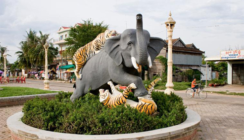

ខេត្តកំពង់ធំ

ដំរីជាន់ខ្លា
ខេត្តកំពង់ធំ គឹជាខេត្តដែលមាន សក្តានុពលខាង វិស័យទេសចរណ៍ ដែលទាក់ទាញចិត្តភ្ញៀវទេសចរណ៍ ជាមួយនិងទីកន្លែងដ៏កម្រៗ ដូចជា បឹង ស្ទឹង ព្រៃឈើ ភ្នំ ហើយនិង ប្រាសាទបុរាណ ជាច្រើនជាង ២០០ ប្រាសាទទៀតផង។ កំពង់ធំ ស្ថិតនៅជាប់នឹង បឹងទន្លេសាប ហើយ នៅក្នុងឆ្នាំ ២០០៣
ដល់ ២០០៤ គេបានចាប់ទុកថាជាខេត្តនៃប្រភពត្រីដ៏ច្រើនលើសលុបប្រហែល (១៨ ៨០០ តោន) និង ជាតំបន់ជាប់ចំណាត់ថ្នាក់លេខ ៤ ដែលមានត្រីច្រើនជាងគេបំផុត ដែលអាចចិញ្ចឹមប្រទេសកម្ពុជាបាន (១ ៨០០ តោន)។ ត្រីភាគច្រើនដែល បានកើនឡើងគឺដោយសារមានការចិញ្ចឹមនៅតាម គ្រួសារនានា ជាមួយនិងការខិតខំប្រឹងប្រែងចិញ្ចឹម
នៅតាមវាលស្រែ។[៥] កំពង់ធំក៏ជាផ្នែកមួយដ៏ធំបំផុតចំពោះ ផលិផល គ្រាប់ស្វាយចន្ទី នៅក្នុង ប្រទេសកម្ពុជា ជាមួយផ្ទៃដីដាំដុះនៅក្នុងឆ្នាំ ២០០៣ ដល់ ២០០៤ ប្រមាណ ៦ ៣៧១ ហិកតា។
ប្រាសាទសំបូរព្រៃគុក
ប្រាសាទសំបូរព្រៃគុក ស្ថិតនៅភូមិសំបូរ ឃុំសំបូរ ស្រុកសំបូរ ចម្ងាយប្រមាណ ៣៥ គីឡូម៉ែត្រពីទីរួមខេត្តកំពង់ធំដែលសង់លើដី រាបស្មើមានទំហំ ៣ ០០០ ហិកតា និងជារមណីយដ្ឋាន ទេសចរណ៍វប្បធម៌បុរាណ មួយកន្លែងនៅខេត្តនេះ។ ប្រាសាទនេះសង់ពីថ្មបាយកៀ្រម ឥដ្ឋតាន់
និងថ្មភក់ ក្នុងរជ្ជកាលព្រះបាទឦសានវរ្ម័ន (គ.ស. ៦១៦-៦៣៥) នាសម័យចេនឡា ដើម្បីឧទ្ទិសថ្វាយ ព្រះសិវៈក្នុងលទ្ធិព្រហ្មញ្ញសាសនា។ ប្រាសាទសំបូរព្រៃគុក នេះមានប្រាសាទប្រហែល ជាង ១២០ ប្រាសាទ ស្ថិតនៅជាក្រុម។ ប្រាសាទនេះមានក្រុមប្រាសាទ ដូចជា ក្រុម
ប្រាសាទតោ
ក្រុមប្រាសាទយាយព័ន្ធ ប្រាសាទបិទមុខ ..ណ៍។ ម្យ៉ាងវិញទៀត ប្រាសាទសំបូរព្រៃគុកបានទាក់ទាញភ្ញៀវទេសចរណ៍ បរទេស និងក្នុងស្រុកជាច្រើន អោយមកទស្សនាកំសាន្ត ដែលជាហេតុជួយបង្កើនកម្រិតជីវភាពប្រជាជនរស់នៅតាមតំបន់នោះ និងជួយផ្សព្វផ្សាយនូវវប្បធម៌ របស់ខ្មែរ..។ ប្រាសាទនេះក៏មានលក្ខណៈដូចប្រាសាទដទៃទៀត
នៅប្រទេសកម្ពុជាដែរ វាមានកំពែងព័ទ្ធជុំវិញ មានស្រះទឹក មានកន្លែងបូជាផ្សេងៗ និងនៅព័ទ្ធជុំវិញប្រាសាទមាន ដើមឈើតូចធំ រុក្ខជាតិ សត្វផ្សេងៗ គួរអោយចាប់អារម្មអោយកាន់តែច្រើន ទៀតផង។ ប្រាសាទសំបូរព្រៃគុក ក៏ជួយចូលរួមចំណែកក្នុងការ អភិវឌ្ឍប្រទេសជាតិ ក្នុងគ្រប់រូបភាពផងដែរ។
បន្ទាប់ពីការធ្វើដំណើរកំសាន្ត ហត់នឿយអស់កម្លាំងមក ខេត្តកំពង់ធំ មានកន្លែងសម្រាប់បំបាត់ការនឿយហត់ដែរ គឺស្ទឹងព្រៃប្រស់។
ភ្នំសន្ទុក
ស្ថិតនៅក្នុង ភូមិកកោះ ឃុំកកោះ ស្រុកសន្ទុក ខេត្តកំពង់ធំ និងមានចម្ងាយ ១៧ គម ពីទីរួមខេត្តកំពង់ធំ តាមបណ្តោយ ផ្លូវជាតិលេខ៦ដែលជាតំបន់ទេសចរណ៍ ធម្មជាតិនិងវប្បធម៌ មួយកន្លែងស្ថិតក្នុងខេត្តនេះ។ នៅពេលមានពិធីបុណ្យផ្សេងៗ និងថ្ងៃឈប់សម្រាកនានា ប្រជាជនតែងតែនាំគ្នាទៅ
ដើរកំសាន្តនៅទីនោះ លក្ខណៈជាក្រុមគ្រួសារ ឬមិត្តភក្ដិ។ ដើម្បីធ្វើដំណើរទៅកាន់ភ្នំសន្ទុក យើងត្រូវធ្វើដំណើរចុះពីថ្នល់ជាតិ បន្តិចតាមក្លោងទ្វាររហូតដល់ជើងភ្នំដោយមានទេសភាពស្រស់ត្រកាលអមដងផ្លូវ។ ពេលមកដល់ជើងភ្នំ យើងនឹងមើលឃើញទេសភាពដ៍ស្រស់បំព្រងនៅជាប់នឹងជើងភ្នំ
ហើយអាចឡើងទៅលើកំពូលភ្នំបានតាម២របៀប។ របៀបទី១ យើងអាច ធ្វើដំណើរដោយបើកបរយានយន្ត ឬ ម៉ូតូឡើងតាមផ្លូវដែលក្រវិចក្រវៀន តាមចង្កេះភ្នំរហូតដល់កំពូលភ្នំ តាមរយៈ ថ្នល់ចាក់បេតុងយ៉ាងមាំ និងមានចំណតយានយន្តយ៉ាងធំទូលាយសម្រាប់ចត។ របៀបទី២យើងអាចឡើងទៅលើកំពូលភ្នំបាន តាមរយៈកាំជណ្តើរពីជើងភ្នំ
ដល់កំពូលភ្នំ ដែលមានកាំជណ្តើរសរុប ៨០៩ កាំ ហើយកាំជណ្តើរខ្លះទាប កាំជណ្តើរខ្លះខ្ពស់តាមកន្លែង និងមានបង្កាន់ដៃអមតាមផ្លូវ។ ពេលឡើងដល់កំពូលភ្នំ យើងនឹងពើបប្រទះ ព្រះវិហារ១ នៅជាប់មាត់កាំជណ្តើរ អាស្រមអ្នកតាថ្មអណ្តែត ហើយអាចមើលឃើញ ទេសភាពយ៉ាងស្អាតនៅជុំវិញ ខ្លួនយើងពីលើកំពូលភ្នំមកមាន
វាលស្រែព្រៃឈើពណ៌បៃតង លំនៅស្ថានប្រជាជន ទឹកទន្លេ ស្ទឹង បឹងបួរ ផ្ទៃមេឃខៀវស្រងាត់ រួមជាមួយខ្យល់អាកាសបរិសុទ្ធធម្មជាតិ ទៀតផង។
ភ្នំសន្ទុក
ស្ទឹងព្រៃប្រស់ជាស្ទឹងមួយ ដែលហូរកាត់ខេត្តកំពង់ធំស្ថិតក្នុងស្រុកកំពង់ស្វាយ នៅតាមបណ្តោយផ្លូវជាតិលេខ៦ ពីភ្នំពេញទៅ សៀមរាប។ ស្ទឹងនេះជារមណីយដ្ឋាន ទេសចរណ៍ធម្មជាតិមួយកន្លែង ដែលល្បីក្នុងខេត្តកំពង់ធំ។នៅថ្ងៃមានបុណ្យទានម្តងៗ ឬមានពិធីផ្សេងៗតែងតែមាន ភ្ញៀវទេសចរណ៍នានាទៅ
ដើរកំសាន្តទាំងជនជាតិខ្មែរ និងជនបរទេស។ នៅរដូវវស្សាស្ទឹងព្រៃប្រស់មានទឹក ដ៏ថ្លាឈ្វេងនិង ស្រស់ស្អាតសម្រាប់ លេងកំសាន្ត ប្រកបដោយទេសភាពស្រស់បំព្រង។ នៅអបមាត់ទឹក មានរមណីយដ្ឋាន និងអាហារដ្ឋាន ដែលអ្នកស្រុករស់នៅតាមតំបន់នោះជាអ្នកបើក ដើម្បីបម្រើដល់សេចក្តីត្រូវការរបស់ភ្ញៀវទេសចរណ៍។
អាហារដ្ឋានទាំងនោះ គឺធ្វើឡើងយ៉ាងស្អាត មានអង្រឹងសម្រាប់អង្គុយ នៅលើមាត់ទឹកជាមួយខ្យល់អាកាសដ៏បរិសុទ្ធ បន្ថែមជាមួយរសជាតិអាហារយ៉ាងឈ្ងុយឆ្ងាញ់។ យើងអាចកម៉្មង់អាហារ បានជាច្រើន តាមតម្រូវការ ដូចជា មាន់ដុត បាញ់ឆែវ ត្រីដុត បុកល្ហុង ប្រហិត....... ផ្លែឈើគ្រប់មុខ
និងភេសជ្ជៈ គ្រប់ប្រភេទ ជាមួយសេវាកម្មរហ័សទាន់ចិត្ត។ និយាយរួមស្ទឹងព្រៃប្រស់ សមជាកន្លែងសម្រាប់លំហែកាយជាលក្ខណៈក្រុមគ្រួសារ និងដំណើរកំសាន្តផ្សេងៗ សម្រាប់ប្រជាជនយើង។ ម្យ៉ាងទៀតនៅមានស្ទឹងមួយទៀតដែលមានសារៈសំខាន់សម្រាប់ខេត្តកំពង់ធំគឺស្ទឹងសែន។ ស្ទឹងសែនជាស្ទឹងមួយដែលហូរកាត់ខេត្តកំពង់ធំ
មានប្រភពមកពីទីខ្ពង់រាប។ វាផ្តល់អត្ថប្រយោជន៍ច្រើនណាស់ដល់ប្រជាជន រស់នៅតំបន់នោះ ដូចជា ផ្តល់ទឹកសម្រាប់ធ្វើកសិកម្ម ដំណាំស្រូវ ដំណាំចម្ការទាំងប្រាំង និងវស្សា ផ្តល់ត្រីសម្រាប់បំពេញនូវតម្រូវការម្ហូបអាហារប្រចាំថ្ងៃ ជាផ្លូវគមនាគមន៍ ផ្តល់ទឹកសម្រាប់ ប្រើប្រាស់ក្នុងជីវភាពប្រចាំថ្ងៃ
ជាកន្លែងទេសចរណ៍ និង ផ្តល់នូវគ្រប់តម្រូវការផ្សេងៗ។